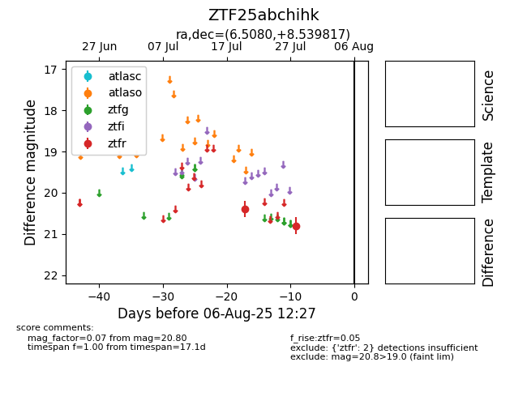

Target ZTF25abchihk at 2025-08-06 17:07, see:
FINK: fink-portal.org/ZTF25abchihk
Lasair: lasair-ztf.lsst.ac.uk/objects/ZTF25abchihk
ALeRCE: alerce.online/object/ZTF25abchihk
alt names
ZTF25abchihk (ztf,fink)
coordinates:
equatorial (ra, dec) = (6.5080,+8.53982)
galactic (l, b) = (112.2560,-53.80448)
photometry
last ztfr=20.80
2 ztfr detections
